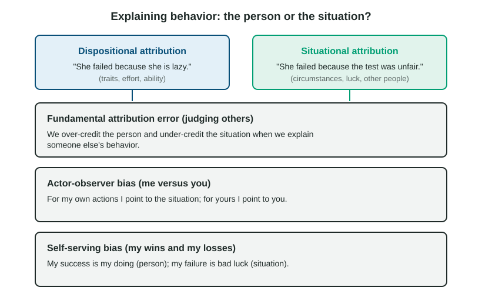

Every day you explain other people's behavior, usually in a split second. The barista was short with you: is she rude, or is it the end of a ten-hour shift? Your friend canceled plans: does he not care, or did something come up? Social psychology begins here, with how we explain behavior and how those explanations shape the way we see others and ourselves.
Two kinds of explanation

Attribution theory says people explain behavior in one of two ways. A dispositional attribution points to the person: their personality, ability, effort or character ("He failed because he is lazy"). A situational attribution points to the circumstances: the task, luck, time, other people ("He failed because the test covered material that was never taught"). Both can be correct. The interesting part is that people lean one way or the other in predictable patterns.
Three biases
| Bias | Whose behavior | The pattern | Example |
|---|---|---|---|
| Fundamental attribution error | Other people's | Too much disposition, too little situation | "That driver is a jerk," without thinking he may be rushing to a hospital |
| Actor-observer bias | Mine compared with yours | Situation for my behavior, disposition for yours | "I was late because of traffic; you were late because you are careless" |
| Self-serving bias | My own outcomes | Credit for success, the situation for failure | "I aced it because I'm smart; I failed because the test was unfair" |
Why does the fundamental attribution error happen? When you watch someone, the person is what you see; the pressures on them are mostly invisible. When you act yourself, you can see the pressures on you (the traffic, the bad night's sleep), which is why the actor-observer bias appears. The self-serving bias protects how we feel about ourselves.
These biases are not equally strong everywhere. Studies comparing cultures find that people raised in East Asian cultures, which emphasize relationships and context, tend to give more weight to the situation than people raised in the United States, which emphasizes individual independence. The bias is common, but culture shapes its size. Research also finds that the actor-observer bias is smaller and less consistent than early studies suggested; a 2006 review of many studies by Bertram Malle found the average difference close to zero, with a clearer gap in some situations, such as explaining negative events. Learn it as a tendency, not a rule.
Worked example: which bias? Ask whose behavior is being explained, and whether there is a contrast.
- "My roommate never cleans because she's a slob." One person's behavior, explained by disposition, no contrast with the speaker: fundamental attribution error.
- "I didn't clean because I had three exams; she didn't clean because she's a slob." Same behavior, situation for me and disposition for her: actor-observer bias.
- "We won because of my defense; we lost because the referees were awful." My own success and failure: self-serving bias.
Explaining your own life
Locus of control is a general belief about who controls your outcomes. People with an internal locus of control believe their own actions decide what happens; people with an external locus of control believe luck, fate or powerful others decide. An internal locus is linked with more effort, better grades and better health habits, though these findings are correlational: success can also build an internal locus.
Explanatory style is how you habitually explain bad events. An optimistic explanatory style sees a setback as temporary, limited to one area and not wholly your fault ("I bombed this interview; I'll prepare differently next time"). A pessimistic explanatory style sees it as personal, permanent and pervasive ("I'm hopeless, and everything I try fails"). A pessimistic style is linked with giving up and with low mood.
How we perceive others and ourselves
- The mere exposure effect: we tend to like people, faces, songs and products more the more often we encounter them. Familiarity tends to breed liking, which is one reason ads repeat.
- A self-fulfilling prophecy: an expectation leads to behavior that makes it come true. A teacher who expects a student to struggle may call on him less and give him less feedback, and he then does struggle. Effects of teacher expectations are real but usually small.
- Social comparison: we judge ourselves against others. Upward social comparison, with people who are better off, can motivate or discourage; downward social comparison, with people who are worse off, tends to make us feel better.
- Relative deprivation: feeling deprived compared with a reference group, even when you are well off. Workers happy with a raise feel cheated on learning that others got more.